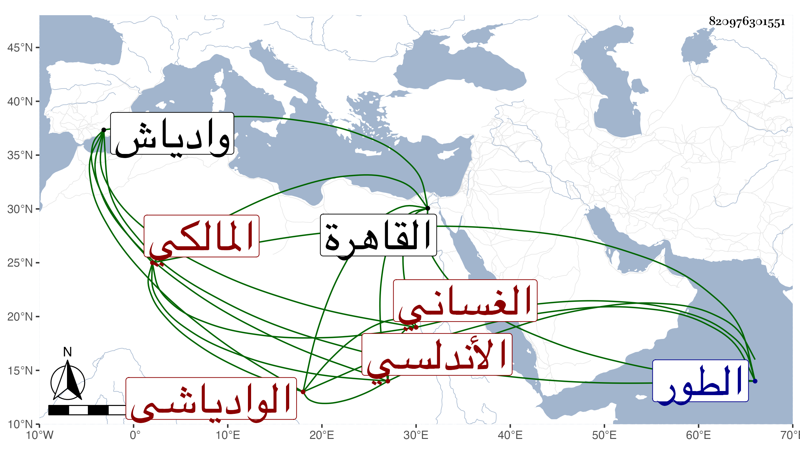

0902Sakhawi.DawLamic.ITO20230111-ara1.EIS1600.820976301551
Biography ID: 820976301551
679
أحمد بن أبي يحيى بن محمد بن خلف أبو جعفر الغساني الأندلسي الوادياشي المالكي ويعرف بالازيرق . قدم القاهرة في أثناء سنة ست وتسعين ليحج فاجتمع بي مع رفيقه وبلديه أبي القسم بن علي بن محمد ، وسمع مني المسلسل بشرطه وبعض ارتياح الأكباد بل قرأ على التوجه للرب بدعوات الكرب من تصنيفي من نسخة بخطه وأجزت له . ومولده في سنة ست وستين وثمانمائة بوادياش وحفظ القرآن وألفية النحو والجرومية وعرضهما على بلديه على بن أحمد ابن داود البلوي ودرس غيرهما مما لم يكمله وانتفع به في الفقه والعربية وغير ذلك وكذا أخذ عن غيره قليلا ثم سمع علي مني أماكن من الكتب الستة والموطأ ومسند الشافعي وغير ذلك وكتبت له وسافر في أوائل رجب منها في البحر من الطور ثم عاد مع الركب بعد قضاء نسكه ونعم الرجل .
